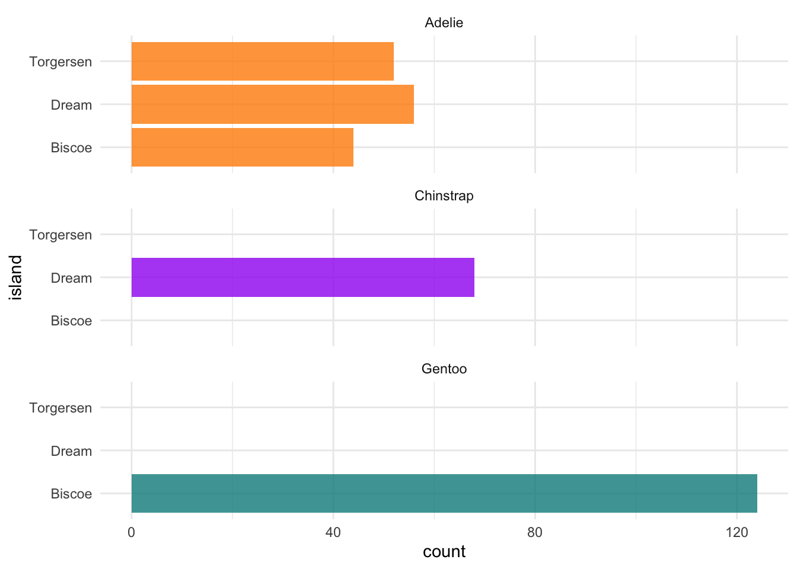
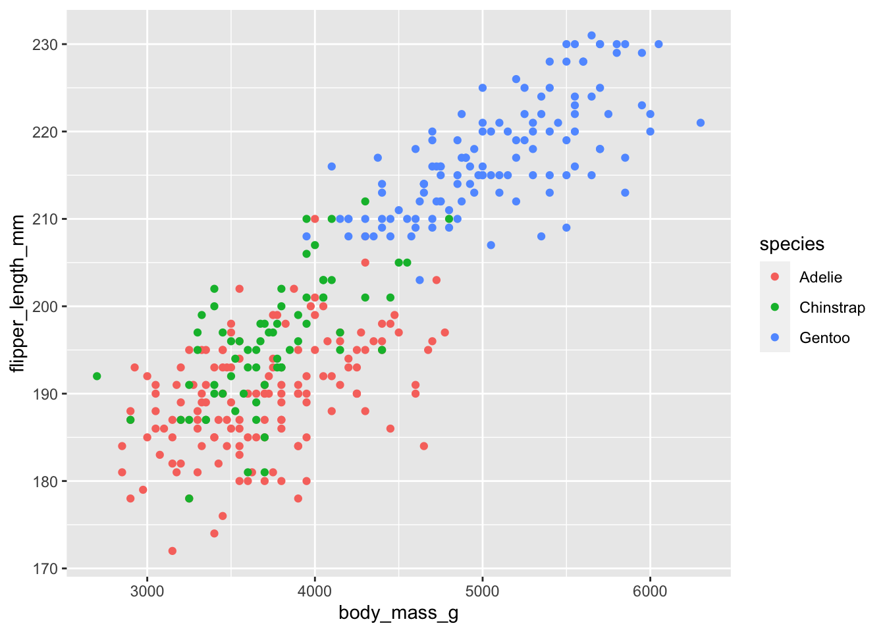

3 Introduction to R, RStudio and R Markdown
In this lesson we will get a general introduction to coding in RStudio, using R Markdown, some R fundamentals such as data types and indexing, and touch on a range of coding topics that we will dive into deeper throughout the course.
3.1 Getting to know RStudio
When you first open RStudio, it is split into 3 panels:
- The Console (left), where you can directly type and run code (by hitting Enter)
- The Environment/History pane (upper-right), where you can view the objects you currently have stored in your environment and a history of the code you’ve run
- The Files/Plots/Packages/Help pane (lower-right), where you can search for files, view and save your plots, view and manage what packages are loaded in your library and session, and get R help.

To write and save code you use scripts (or RMarkdown, which we will learn shortly). You can open a new script with File -> New File or by clicking the icon with the green plus sign in the upper left corner. When you open a script, RStudio then opens a fourth ‘Source’ panel in the upper-left to write and save your code. You can also send code from a script directly to the console to execute it by highlighting the entire code line/chunk (or place your cursor at the end of the code chunk) and hit CTRL+ENTER on a PC or CMD+ENTER on a Mac.

It is good practice to add comments/notes throughout your scripts to document what the code is doing. To do this start a line with a #. R knows to ignore everything after a #, so you can write whatever you want there. Note that R reads line by line, so if you want your comments to carry over multiple lines you need a # at every line.
3.2 R Projects
As a first step whenever you start a new project, workflow, analysis, etc., it is good practice to set up an R project. R Projects are RStudio’s way of bundling together all your files for a specific project, such as data, scripts, results, figures. Your project directory also becomes your working directory, so everything is self-contained and easily portable.
We recommend using a single R Project (i.e., contained in a single folder) for this course, so lets create one now.
You can start an R project in an existing directory or in a new one. To create a project go to File -> New Project:

Let’s choose ‘New Directory’ then ‘New Project’. Now choose a directory name, this will be both the folder name and the project name, so use proper spelling conventions (no spaces!). We recommend naming it something course specific, like ‘WR-696-2023’, or even more generic ‘Intro-R-Fall23’. Choose where on your local file system you want to save this new folder/project (somewhere you can find it easily), then click ‘Create Project’.
Now you can see your RStudio session is working in the R project you just created. You can see the working directory printed at the top of your console is now the project directory, and in the ‘Files’ tab in RStudio you can see there is an .Rproj file with the same name as the R project, which will open up this R project in RStudio whenever you come back to it.
Test out how this .Rproj file works. Close out of your R session, navigate to the project folder on your computer, and double-click the .Rproj file.
What is a working directory? A working directory is the default file path to a specific file location on your computer to read files from or save files to. Since everyone’s computer is unique, everyone’s full file paths will be different. This is an advantage of working in R Projects, you can use relative file paths, since the working directory defaults to wherever the .RProj file is saved on your computer you don’t need to specify the full unique path to read and write files within the project directory.
3.3 Write a set-up script
Let’s start coding!
The first thing you do in a fresh R session is set up your environment, which mostly includes installing and loading necessary libraries and reading in required data sets. Let’s open a fresh R script and save it in our root (project) directory. Call this script ‘setup.R’.
3.3.1 Functions
Before creating a set up script, it might be helpful to understand the use of functions in R if you are new to this programming language. R has many built in functions to perform various tasks. To run these functions you type the function name followed by parentheses. Within the parentheses you put in your specific arguments needed to run the function.
## [1] 2.302585## [1] 3## [1] 3## [1] "Hello World"## [1] "Hello-World"3.3.2 Packages
R Packages include reusable functions that are not built-in with R. To use these functions, you must install the package to your local system with the install.packages() function. Once a package is installed on your computer you don’t need to install it again (you will likely need to update it at some point though). Anytime you want to use the package in a new R session you load it with the library() function.
When do I use :: ?
If you have a package installed, you don’t necessarily have to load it in with library() to use it in your R session. Instead, you can type the package name followed by :: and use any functions in that package. This may be useful for some one-off functions using a specific package, however if you will be using packages a lot throughout your workflow you will want to load it in to your session. You should also use :: in cases where you have multiple packages loaded that may have conflicting functions (e.g., plot() in Base R vs. plot() in the terra package).
3.3.2.1 Base R vs. The Tidyverse
You may hear us use the terms ‘Base R’ and ‘Tidyverse’ a lot throughout this course. Base R includes functions that are installed with the R software and do not require the installation of additional packages to use them. The Tidyverse is a collection of R packages designed for data manipulation, exploration, and visualization that you are likely to use in every day data analysis, and all use the same design philosophy, grammar, and data structures. When you install the Tidyverse, it installs all of these packages, and you can then load all of them in your R session with library(tidyverse). Base R and Tidyverse have many similar functions, but many prefer the style, efficiency and functionality of the Tidyverse packages, and we will mostly be sticking to Tidyverse functions for this course.
3.3.2.2 Package load function
To make code reproducible (meaning anyone can run your code from their local machines) we can write a function that checks whether or not necessary packages are installed, if not install them and load them, or if they are already installed it will only load them and not re-install. This function looks like:
packageLoad <-
function(x) {
for (i in 1:length(x)) {
if (!x[i] %in% installed.packages()) {
install.packages(x[i])
}
library(x[i], character.only = TRUE)
}
}For each package name given (‘x’) it checks if it is already installed, if not installs it, and then loads that package into the session. In future lessons we will learn more about writing custom functions, and iterating with for loops, but for now you can copy/paste this function and put it at the top of your set up script. When you execute this chunk of code, you won’t see anything printed in the console, however you should now see packageLoad() in your Environment under ‘Functions’. You can now use this function as many times as you want. Test is out, and use it to install the tidyverse package(s).
You can also give this function a string of package names. Lets install all the packages we will need for the first week, or if you already followed the set up instructions, this will just load the packages into your session since you already installed them.
# create a string of package names
packages <- c('tidyverse',
'palmerpenguins',
'rmarkdown')
packageLoad(packages)Since this is code you will be re-using throughout your workflows, we will save it as its own script and run it at the beginning of other scripts/documents using the source() function as a part of our reproducible workflows.
3.4 R Markdown
Throughout this course you will be working mostly in R Markdown documents. R Markdown is a notebook style interface integrating text and code, allowing you to create fully reproducible documents and render them to various elegantly formatted static or dynamic outputs (which is how you will be submitting your assignments).
You can learn more at the R Markdown website, which has really informative lessons on the Getting Started page and you can see the range of outputs you can create at the Gallery page.
3.4.1 What About Quarto?
Some of you may have heard of Quarto, which is essentially an extension of R Markdown but it lives as its own software to allow its use in other languages such as Python, Julia and Observable. You can install the Quarto CLI on its own and RStudio will detect it so you can create documents within the IDE, or alternatively with newer versions of RStudio a version of Quarto is built-in and you can enable Quarto through the R Markdown tab in Global Options. R Markdown isn’t going anywhere, however many in the data science realm are switching to Quarto. Quarto documents are very similar to R Markdown, in fact Quarto can even render R Markdown documents, so after learning R Markdown in this course you should have some of the fundamental skills to easily switch to Quarto if you want to. You can read more about Quarto here.
3.4.2 Getting started with R Markdown
Let’s create a new document by going to File -> New File -> R Markdown. You will be prompted to add information like title and author, fill those in (let’s call it “Intro to R and R Markdown”) and keep the output as HTML for now. Click OK to create the document.
This creates an outline of an R Markdown document, and you see the title, author and date you gave the prompt at the top of the document which is called the YAML header.
Notice that the file contains three types of content:
An (optional) YAML header surrounded by
---sR code chunks surrounded by
```stext mixed with simple text formatting
Since this is a notebook style document, you run the code chunks by clicking the green play button, and then the output is returned directly below the chunk.
If you’d rather have the code chunk output go to the console instead of directly below the chunk in your R Markdown document, go to Tools -> Global Options -> R Markdown and uncheck “Show output inline for all R Markdown documents”
When you want to create a report from your notebook, you render it by hitting the ‘knit’ button at the top of the Source pane (with the ball of yarn next to it), and it will render to the format you have specified in the YAML header. In order to do so though, you need to have the rmarkdown package installed.
You can delete the rest of the code/text below the YAML header, and insert a new code chunk at the top. You can insert code chunks by clicking the green C with the ‘+’ sign at the top of the source editor, or with the keyboard short cut (Ctrl+Alt+I for Windows, Option+Command+I for Macs). For the rest of the lesson (and course) you will be writing and executing code through code chunks, and you can type any notes in the main body of the document.
The first chunk is almost always your set up code, where you read in libraries and any necessary data sets. Here we will execute our set up script to install and load all the libraries we need:
3.5 Explore
Normally when working with a new data set, the first thing we do is explore the data to better understand what we’re working with. To do so, you also need to understand the fundamental data types and structures you can work with in R.
3.5.1 The penguins data
For this intro lesson, we are going to use the Palmer Penguins data set (which is loaded with the palmerpenguins package you installed in your set up script). This data was collected and made available by Dr. Kristen Gorman and the Palmer Station, Antarctica LTER, a member of the Long Term Ecological Research Network.
Load the penguins data set.
You now see it in the Environment pane. Print it to the console to see a snapshot of the data:
## # A tibble: 344 × 8
## species island bill_length_mm bill_depth_mm flipper_…¹ body_…² sex year
## <fct> <fct> <dbl> <dbl> <int> <int> <fct> <int>
## 1 Adelie Torgersen 39.1 18.7 181 3750 male 2007
## 2 Adelie Torgersen 39.5 17.4 186 3800 fema… 2007
## 3 Adelie Torgersen 40.3 18 195 3250 fema… 2007
## 4 Adelie Torgersen NA NA NA NA <NA> 2007
## 5 Adelie Torgersen 36.7 19.3 193 3450 fema… 2007
## 6 Adelie Torgersen 39.3 20.6 190 3650 male 2007
## 7 Adelie Torgersen 38.9 17.8 181 3625 fema… 2007
## 8 Adelie Torgersen 39.2 19.6 195 4675 male 2007
## 9 Adelie Torgersen 34.1 18.1 193 3475 <NA> 2007
## 10 Adelie Torgersen 42 20.2 190 4250 <NA> 2007
## # … with 334 more rows, and abbreviated variable names ¹flipper_length_mm,
## # ²body_mass_g3.5.2 Data Types
This data is structured as a data frame, probably the most common data type and one you are most familiar with. These are like Excel spreadsheets, tabular data organized by rows and columns. However we see at the top this is called a tibble which is just a fancy kind of data frame specific to the tidyverse.
At the top we can see the data type of each column. There are five main data types:
character:
"a","swc"numeric:
2,15.5integer:
2L(theLtells R to store this as an integer)logical:
TRUE,FALSEcomplex:
1+4i(complex numbers with real and imaginary parts)
Data types are combined to form data structures. R’s basic data structures include
atomic vector
list
matrix
data frame
factors
You can see the data type or structure of an object using the class() function, and get more specific details using the str() function. (Note that ‘tbl’ stands for tibble).
## [1] "tbl_df" "tbl" "data.frame"## tibble [344 × 8] (S3: tbl_df/tbl/data.frame)
## $ species : Factor w/ 3 levels "Adelie","Chinstrap",..: 1 1 1 1 1 1 1 1 1 1 ...
## $ island : Factor w/ 3 levels "Biscoe","Dream",..: 3 3 3 3 3 3 3 3 3 3 ...
## $ bill_length_mm : num [1:344] 39.1 39.5 40.3 NA 36.7 39.3 38.9 39.2 34.1 42 ...
## $ bill_depth_mm : num [1:344] 18.7 17.4 18 NA 19.3 20.6 17.8 19.6 18.1 20.2 ...
## $ flipper_length_mm: int [1:344] 181 186 195 NA 193 190 181 195 193 190 ...
## $ body_mass_g : int [1:344] 3750 3800 3250 NA 3450 3650 3625 4675 3475 4250 ...
## $ sex : Factor w/ 2 levels "female","male": 2 1 1 NA 1 2 1 2 NA NA ...
## $ year : int [1:344] 2007 2007 2007 2007 2007 2007 2007 2007 2007 2007 ...## [1] "factor"## Factor w/ 3 levels "Adelie","Chinstrap",..: 1 1 1 1 1 1 1 1 1 1 ...When we pull one column from a data frame like we just did above using the $ operator, that returns a vector. Vectors are 1-dimensional, and must contain data of a single data type (i.e., you cannot have a vector of both numbers and characters).
If you want a 1-dimensional object that holds mixed data types and structures, that would be a list. You can put together pretty much anything in a list.
## List of 4
## $ : chr "apple"
## $ : num 1993
## $ : logi FALSE
## $ : tibble [344 × 8] (S3: tbl_df/tbl/data.frame)
## ..$ species : Factor w/ 3 levels "Adelie","Chinstrap",..: 1 1 1 1 1 1 1 1 1 1 ...
## ..$ island : Factor w/ 3 levels "Biscoe","Dream",..: 3 3 3 3 3 3 3 3 3 3 ...
## ..$ bill_length_mm : num [1:344] 39.1 39.5 40.3 NA 36.7 39.3 38.9 39.2 34.1 42 ...
## ..$ bill_depth_mm : num [1:344] 18.7 17.4 18 NA 19.3 20.6 17.8 19.6 18.1 20.2 ...
## ..$ flipper_length_mm: int [1:344] 181 186 195 NA 193 190 181 195 193 190 ...
## ..$ body_mass_g : int [1:344] 3750 3800 3250 NA 3450 3650 3625 4675 3475 4250 ...
## ..$ sex : Factor w/ 2 levels "female","male": 2 1 1 NA 1 2 1 2 NA NA ...
## ..$ year : int [1:344] 2007 2007 2007 2007 2007 2007 2007 2007 2007 2007 ...You can even nest lists within lists
## [[1]]
## [[1]][[1]]
## [1] "apple"
##
## [[1]][[2]]
## [1] 1993
##
## [[1]][[3]]
## [1] FALSE
##
## [[1]][[4]]
## # A tibble: 344 × 8
## species island bill_length_mm bill_depth_mm flipper_…¹ body_…² sex year
## <fct> <fct> <dbl> <dbl> <int> <int> <fct> <int>
## 1 Adelie Torgersen 39.1 18.7 181 3750 male 2007
## 2 Adelie Torgersen 39.5 17.4 186 3800 fema… 2007
## 3 Adelie Torgersen 40.3 18 195 3250 fema… 2007
## 4 Adelie Torgersen NA NA NA NA <NA> 2007
## 5 Adelie Torgersen 36.7 19.3 193 3450 fema… 2007
## 6 Adelie Torgersen 39.3 20.6 190 3650 male 2007
## 7 Adelie Torgersen 38.9 17.8 181 3625 fema… 2007
## 8 Adelie Torgersen 39.2 19.6 195 4675 male 2007
## 9 Adelie Torgersen 34.1 18.1 193 3475 <NA> 2007
## 10 Adelie Torgersen 42 20.2 190 4250 <NA> 2007
## # … with 334 more rows, and abbreviated variable names ¹flipper_length_mm,
## # ²body_mass_g
##
##
## [[2]]
## [[2]][[1]]
## [1] "more stuff here"
##
## [[2]][[2]]
## [[2]][[2]][[1]]
## [1] "and more"You can use the names() function to retrieve or assign names to list and vector elements
## [1] "fruit" "year" "logic" "data"3.5.3 Indexing
Indexing is an extremely important aspect to data exploration and manipulation. In fact you already started indexing when we looked at the data type of individual columns with penguins$species. How you index is dependent on the data structure.
Index lists:
## [1] "apple"## # A tibble: 344 × 8
## species island bill_length_mm bill_depth_mm flipper_…¹ body_…² sex year
## <fct> <fct> <dbl> <dbl> <int> <int> <fct> <int>
## 1 Adelie Torgersen 39.1 18.7 181 3750 male 2007
## 2 Adelie Torgersen 39.5 17.4 186 3800 fema… 2007
## 3 Adelie Torgersen 40.3 18 195 3250 fema… 2007
## 4 Adelie Torgersen NA NA NA NA <NA> 2007
## 5 Adelie Torgersen 36.7 19.3 193 3450 fema… 2007
## 6 Adelie Torgersen 39.3 20.6 190 3650 male 2007
## 7 Adelie Torgersen 38.9 17.8 181 3625 fema… 2007
## 8 Adelie Torgersen 39.2 19.6 195 4675 male 2007
## 9 Adelie Torgersen 34.1 18.1 193 3475 <NA> 2007
## 10 Adelie Torgersen 42 20.2 190 4250 <NA> 2007
## # … with 334 more rows, and abbreviated variable names ¹flipper_length_mm,
## # ²body_mass_gIndex vectors:
## [1] "banana"Index data frames:
# dataframe[row(s), columns()]
penguins[1:5, 2]
penguins[1:5, "island"]
penguins[1, 1:5]
penguins[1:5, c("species","sex")]
penguins[penguins$sex=='female',]
# $ for a single column
penguins$speciesTo index elements of a list you must use double brackets [[ ]], and to index vectors and data frames you use single brackets [ ]
3.5.3.1 Exercises
(not required, but work through them if you want!)
Why don’t the following lines of code work? Tweak each one so the code runs
How many species are in the
penguinsdataset? What islands were the data collected for? (Note: theunique()function might help)Use indexing to create a new data frame that has only 3 columns: species, island and flipper length columns, and subset all rows for just the ‘Dream’ island.
Use indexing and the
mean()function to find the average flipper length for the Adelie species on Dream island. (Note: explore themean()function and how to deal with NA values).
3.5.4 The dplyr package
So far the code you’ve been writing has consisted of Base R functionality. Now lets dive into the Tidyverse with the dplyr package.
dplyr is a Tidyverse package to handle most of your data exploration and manipulation tasks. Now that you have learned indexing, you may notice the first two dplyr functions you are going to learn, filter() and select() act as indexing functions by subsetting rows and columns based on specified names and/or conditions.
Subset rows with filter()
You can filter data in many ways using logical operators (>, >=, <, <=, != (not equal), and == (equal)), AND (&), OR (|), and NOT (!) operators, and other operations such as %in%, which returns everything that matches at least one of the values in a given vector, and is.na() and !is.na() to return all missing or all non-missing data.
filter(penguins, species == "Adelie")
filter(penguins, species != "Adelie")
filter(penguins, island %in% c("Dream", "Torgersen") & !is.na(bill_length_mm))Note: Tidyverse package functions take in column names without quotations.
Using dplyr functions will not manipulate the original data, so if you want to save the returned object you need to assign it to a new variable.
Select columns with select()
select() has many helper functions you can use with it, such as starts_with(), ends_with(), contains() and many more that are very useful when dealing with large data sets. See ?select for more details
# Select two specific variables
select(penguins, species, sex)
# Select a range of variables
select(penguins, species:flipper_length_mm)
# Rename columns within select
select(penguins, genus = species, island)
# Select column variables that are recorded in mm
select(penguins, contains("mm"))Create new variables with mutate()
# New variable that calculates bill length in cm
mutate(penguins, bill_length_cm = bill_length_mm/10)
# mutate based on conditional statements
mutate(penguins, species_sex = if_else(sex == 'male', paste0(species,"_m"), paste0(species, "_f")))Notice the use of paste0() here, and when we briefly used a similar function paste() in the ‘Functions’ section above. Explore the difference between these two. They are both very useful functions for pasting strings together.
These can all be used in conjunction with group_by() which changes the scope of each function from operating on the entire dataset to operating on it group-by-group. group_by() becomes even more powerful when used along with summarise() to calculate some specified summary statistic for each group. However before we start using multiple operations in conjunction with one another, we need to talk about the pipe operator %>%.
3.5.4.1 The pipe %>%
The pipe, %>%, comes from the magrittr package by Stefan Milton Bache. Packages in the tidyverse load %>% for you automatically, so you don’t usually load magrittr explicitly. Pipes are a powerful tool for clearly expressing a sequence of multiple operations.
For example, the pipe operator can take this sequence of operations:
df1 <- filter(penguins, island == "Dream")
df2 <- mutate(df1, flipper_length_cm = flipper_length_mm/10)
df3 <- select(df2, species, year, flipper_length_cm)
print(df3)And turn it into this, removing the need to create intermediate variables
penguins %>%
filter(island == "Dream") %>%
mutate(flipper_length_cm = flipper_length_mm/10) %>%
select(species, year, flipper_length_cm)You can read it as a series of imperative statements: filter, then mutate, then select. A good way to pronounce %>% when reading code is “then”. It takes the output of the operation to the left of %>% and feeds it into the next function as the input.
Say you want to summarize data by some specified group, for example you want to find the average body mass for each species, this is where the group_by() function comes into play.
Or get a count of how many individuals were observed for each species each year
You can even shorten the above operation buy using count() instead of summarise.
3.5.4.2 Exercises
(not required, but useful if you want to work through them!)
Reorder the variables in
penguinsso thatyearis the first column followed by the rest (Hint: look into the use ofeverything()).Create a new column called ‘size_group’ where individuals with body mass greater than the overall average are called ‘large’ and those smaller are called ‘small’.
Find out which year for each species were individuals on average the largest according to body mass.
You want to filter data for years that are not in a vector of given years, but this code doesn’t work. Tweak it so that it does. (Yes, you could just filter year to equal 2007 in this case but there is a trouble-shooting lessons here).
3.6 Visualize
A huge part of data exploration includes data visualization to get quick snapshots of your data and reveal patterns you can’t see from starting a a data frame of numbers. Here we are going to walk through a very quick introduction to ggplot2, using some code examples from the palmerpenguins R package tutorial: https://allisonhorst.github.io/palmerpenguins/articles/intro.html.
ggplot2 is perhaps the most popular data visualization package in the R language, and is also a part of the Tidyverse. One big difference about ggplot though is that it does not use the pipe %>% operator like we just learned, but instead threads together arguments with + signs.
The general structure for ggplots follows the template below. However note that you can also specify the aes() parameters withing ggplot() instead of your geom function, which you may see a lot of people do. The mappings include arguments such as the x and y variables from your data you want to use for the plot. The geom function is the type of plot you want to make, such as geom_point(), geom_bar(), etc, there are a lot to choose from.
If you plan on doing any statistical analysis on your data , one of the first things you are likely to do is explore the distribution of your variables. You can plot histograms with geom_histogram()

This tells us there may be a lot of variation in flipper size among species. We can use the ‘fill =’ argument to color the bars by species, and scale_fill_manual() to specify the colors.
# Histogram example: flipper length by species
ggplot(penguins) +
geom_histogram(aes(x = flipper_length_mm, fill = species), alpha = 0.5, position = "identity") +
scale_fill_manual(values = c("darkorange","darkorchid","cyan4"))Cool, now we can see there seems to be some pretty clear variation in flipper size among species. Another way to visualize across groups is with facet_wrap(), which will create a separate plot for each group, in this case species.
ggplot(penguins) +
geom_histogram(aes(x = flipper_length_mm, fill = species), alpha = 0.5, position = "identity") +
scale_fill_manual(values = c("darkorange","darkorchid","cyan4")) +
facet_wrap(~species)Lets make a quick bar plot showing the total count of each species studied on each island
As you may have already noticed, the beauty about ggplot2 is there are a million ways you can customize your plots. This example builds on our simple bar plot
ggplot(penguins, aes(x = island, fill = species)) +
geom_bar(alpha = 0.8) +
scale_fill_manual(values = c("darkorange","purple","cyan4"),
guide = FALSE) +
theme_minimal() +
facet_wrap(~species, ncol = 1) +
coord_flip()
We can use geom_point() to view the relationship between two variables by specifying the x and y axes. Say we want to visualize the relationship between penguin body mass and flipper length and color the point by species:
ggplot(penguins) +
geom_point(mapping = aes(x = body_mass_g, y = flipper_length_mm, color = species))
3.7 Read and Write Data
We used an R data package today to read in our data frame, but that probably isn’t how you will normally read in your data.
There are many ways to read and write data in R. To read in .csv files, you can use read_csv() which is included in the Tidyverse with the readr package, and to save csv files use write_csv(). The readxl package is great for reading in excel files, however it is not included in the Tidyverse and will need to be loaded separately.